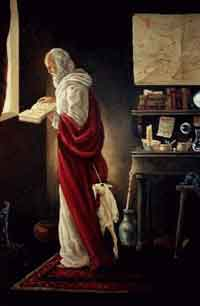

Gli oggetti magici che utilizzano delle cariche per produrre effetti magici possono essere ricaricati. Possono cioè essere messi sotto carica in modo tale da fargli riassorbire l'energia magica in precedenza utilizzata. Questa procedura può essere svolta in un qualsiasi laboratorio magico (non se si tratta però di oggetti clericali o che richiedano metodi di ricarica particolari ). Per poterli sottoporre a tale procedura occorre però che nell'oggetto sia ancora presente dell'energia magica, sarà questa energia residua che verrà fatta poi crescere all'interno dell'oggetto magico. Per questo motivo, di regola, è possibile ricaricare oggetti magici solo se sia rimasta in questi almeno 1 carica magica che è ancora possibile utilizzare (alcuni singoli oggetti magici od intere categorie, come gli anelli magici, fanno eccezione a tale regola potendo essere ricaricati anche qualora tutte le cariche sono state esaurite con un maggiore rischio di rottura).
Il procedimento di messa sotto carica è inoltre un procedimento che stressa l'oggetto magico. Ogni volta che infatti questo viene messo sotto carica (indipendentemente poi dalla quantità della ricarica) c'è una certa possibilità che si verifichi un rigetto dell'energia magica da parte dell'oggetto che non potrà essere mai più ricaricato ( però potranno essere utilizzate, se rimaste, le sue cariche residue e i suoi altri poteri eventuali). In tal caso il mago sarà consapevole del rigetto prima di iniziare il procedimento di ricarica.
Per ricaricare un oggetto magico occorre un laboratorio magico (lo stesso richiesto per creare gli oggetti magici), i giusti ingredienti magici e ovviamente un mago. Non occorre però che il mago sia di livello 9° per provare a ricaricare un oggetto magico, anche un mago alle primi armi può infatti riuscirci.

Per calcolare la percentuale di rottura dell'oggetto, che occorre verificare ogni volta che lo stesso è messo sotto carica, si seguano le seguenti regole:
| Percentuale base di rottura | 10 % |
| Per livello del mago < del 9° | + 2 % |
| Per ogni livello di potere in cui il mago ha ottenuto il 3° grado di conoscenza nelle scuola Enchantment | - 1 % |
| Se il mago ha costruito l'oggetto o conosce il procedimento specifico di costruzione che e' stato utilizzato | - 3 % |
| Se il mago ricarica questo oggetto per la prima volta (non si considera il tipo ma il singolo oggetto specifico) | + 3 % |
| Se sono state utilizzate più dei 2/3 delle cariche massime | + 2 % |
| Se il mago utilizza il metodo di ricarica accurato | - 3 % |
| Se il mago utilizza il metodo di ricarica normale | nessuna |
| Se il mago utilizza il metodo di ricarica rapido |
+ 3 % |
| Se il mago utilizza le polveri magiche di prima qualità | - 3 % |
| Se il mago utilizza le polveri magiche di media qualità | nessuna |
| Se il mago utilizza le polveri magiche di scarsa qualità | + 3 % |
| Se il mago utilizza un laboratorio minimo | + 2 % |
| Se il mago utilizza un laboratorio fornito | nessuna |
| Se il mago utilizza un buon laboratorio di magia | - 1 % |
| Se il mago utilizza un grande laboratorio magico | - 3 % |
| Ogni volta successiva alla prima che l'oggetto è posto sotto carica (fino ad una penalità massima di + 10 %) | + 1 % |
Si noti bene che un tiro pari a 05 - 04 - 03 - 02 - 01 % naturale costituirà un fallimento critico e darà luogo sempre al rigetto della ricarica da parte dell'oggetto magico.
Mettere l'oggetto sotto carica richiede da parte del mago 1 giorno di lavoro per ogni 500 xp dell'oggetto magico che devono essere compiuti senza interruzioni (arrotondando per eccesso per cui un oggetto da 1200 xp. richiede 3 giorni di lavoro per essere messo sotto carica). Quando il mago mette l'oggetto sotto carica e si sarà accorto della riuscita del procedimento sceglierà il metodo di ricarica che vorrà utilizzare, una volta messo l'oggetto sotto carica il metodo prescelto non potrà più essere modificato ma occorrerà se necessario ripetere la messa in carica dell'oggetto. Una volta messo sotto carica l'oggetto può restarci per tempo indefinito (purché si mantenga il laboratorio in buono stato) e il mago potrà frazionare i giorni di lavoro richiesti per ricaricarlo. Solo il mago che ha messo l'oggetto magico sotto carica può procedere a ricaricarlo, se lo vorrà fare un'altro mago dovrà prima levarlo dalla carica e poi rimetterlo sotto carica da sé.
Esistono tre metodi che un mago può utilizzare per ricaricare l'oggetto magico una volta che sia stato messo con successo sotto carica.
1) Metodo di ricarica accurato : E' un procedimento che impegna molto tempo ma è il più sicuro. Il mago si dedica alla ricarica ripetendo le formule magiche più volte e facendo attenzione a tutti i particolari. Per ricaricare una carica con questo procedimento occorrono al mago 5 giorni di lavoro.
2) Metodo di ricarica normale : E' il normale procedimento di ricarica. Il mago presta la normale cautela nel procedimento di ricarica. Per ricaricare una carica con questo procedimento occorrono al mago 3 giorni di lavoro.
3) Metodo di ricarica rapido : E' un procedimento di ricarica estremamente veloce. Il mago svolge il suo lavoro in modo svelto e approssimativo ma con maggiori rischi di rigetto. Per ricaricare una carica con questo procedimento occorre al mago 1 solo giorno di lavoro.
I costi per ricaricare gli oggetti magici comprendono:
1) Il costo del laboratorio : Non occorre necessariamente che il mago abbia il proprio laboratorio, in molte accademie di magia, infatti, per alcune monete d'oro al giorno gli iscritti possono utilizzare degli ottimi laboratori.
2) Il costo del mago : Il costo del mago dipende, ovviamente dal suo livello di esperienza, ma sul suo costo potranno incidere ulteriori circostanza quali la scuola di appartenenza, il luogo di ricarica, il periodo ed i tempi richiesti della ricarica.
3) Il costo degli ingredienti magici : Per la fornire energia magica all'oggetto posto sotto carica occorre che il mago utilizzi costosi ingredienti e polveri magiche che abbia comprato o abbia in precedenza incantato. La quantità delle polveri da utilizzare vari al variare della potenza dell'oggetto magico, inoltre ci sono tre tipo di reagenti che il mago può utilizzare. Le polveri magiche di prima qualità necessarie per ogni carica costano un ammontare di monete d'oro pari al 60% del costo totale dell'oggetto diviso il suo numero di cariche massime. Le polveri magiche di media qualità necessarie per ogni carica costano un ammontare di monete d'oro pari al 40% del costo totale dell'oggetto diviso il suo numero di cariche massime. Le polveri magiche di scarsa qualità necessarie per ogni carica costano un ammontare di monete d'oro pari al 20% del costo totale dell'oggetto diviso il suo numero di cariche massime.